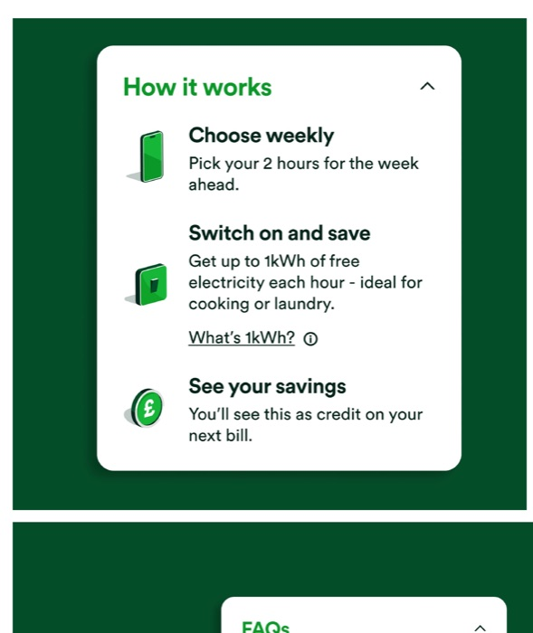
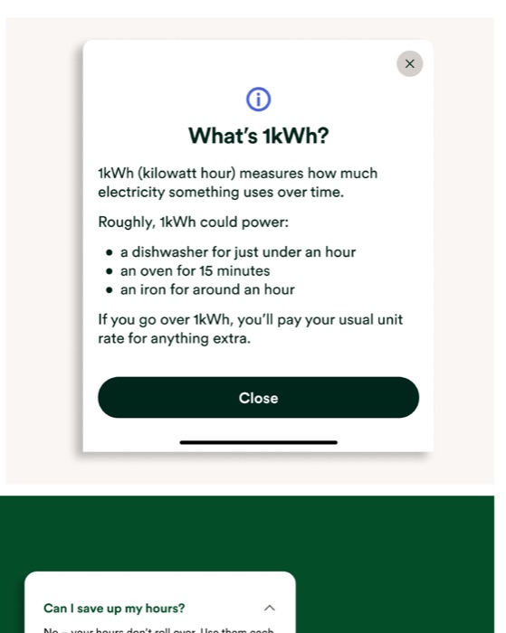

Free electricity: making a capped offer make sense
OVO gave loyalty customers two hours of free electricity a week — my job was making sure they understood exactly what that meant, and actually used it.
Overview
OVO's Beyond loyalty programme offered members two hours of free electricity a week over summer, capped at 1kWh per hour and excluding high-draw appliances like EV chargers. Customers opted in through the app and picked a weekly time slot.
It's a generous offer, but a genuinely confusing one to explain. My job was turning the small print — kWh caps, appliance exclusions, weekly deadlines — into something customers could act on with confidence, without reading a terms and conditions page to do it.
Process
Discover
Sketched early flows to find the narrative, reviewed competitor and inspiration examples with product design, and mapped the full app conversation — what customers needed to know, and when.
Define
Designed the sign-up journey by reusing existing components. Speed mattered more here than a bespoke flow — customers already trusted these patterns from elsewhere in the app.
Design
Wrote setup and connection states with time-based reassurance (like "within 48 hours"), simplified the dashboard into three steps, and added a "What's 1kWh?" bottom sheet with real-world comparisons.
Deliver
Aligned in-app content with the wider TV, radio, and digital campaign, so customers met the same clear story wherever they encountered it.
Key screens & decisions




Results
Why it worked
Reusing tested components meant the team shipped fast without spending trust on unfamiliar patterns. Progressive disclosure — tucking the technical detail into an optional explainer — kept the main flow simple while still meeting accessibility requirements (written to a reading age of 9). And because content stayed aligned with the wider campaign, customers met the same clear story whether they saw it on TV or in the app.